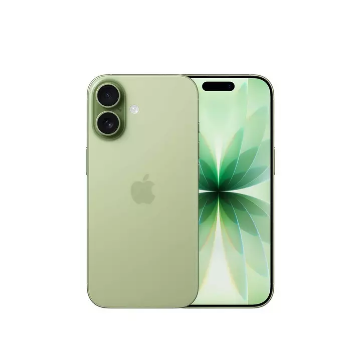
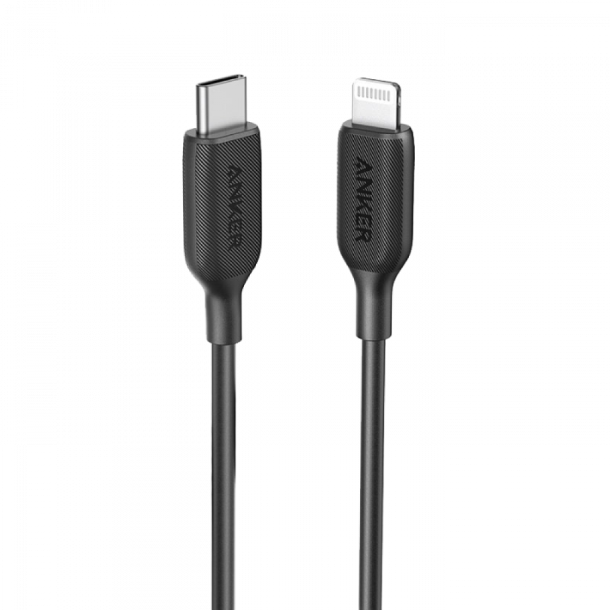
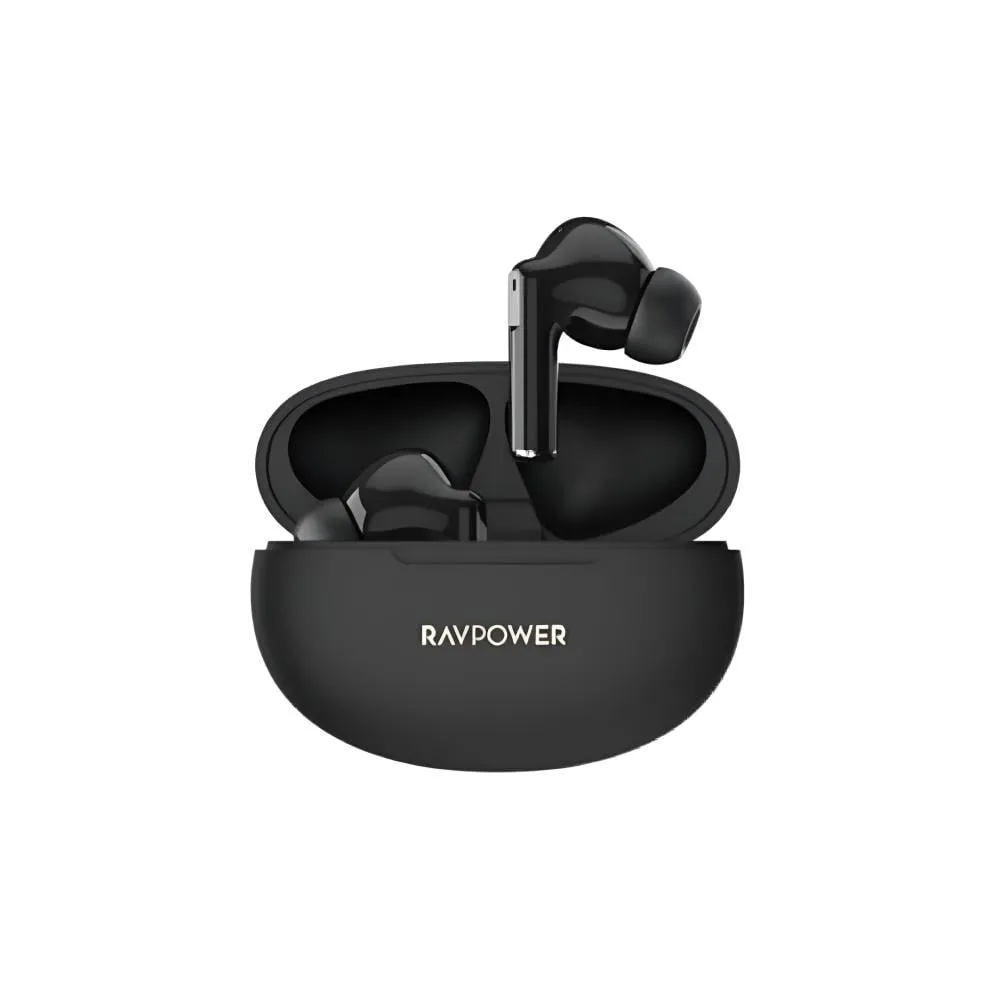
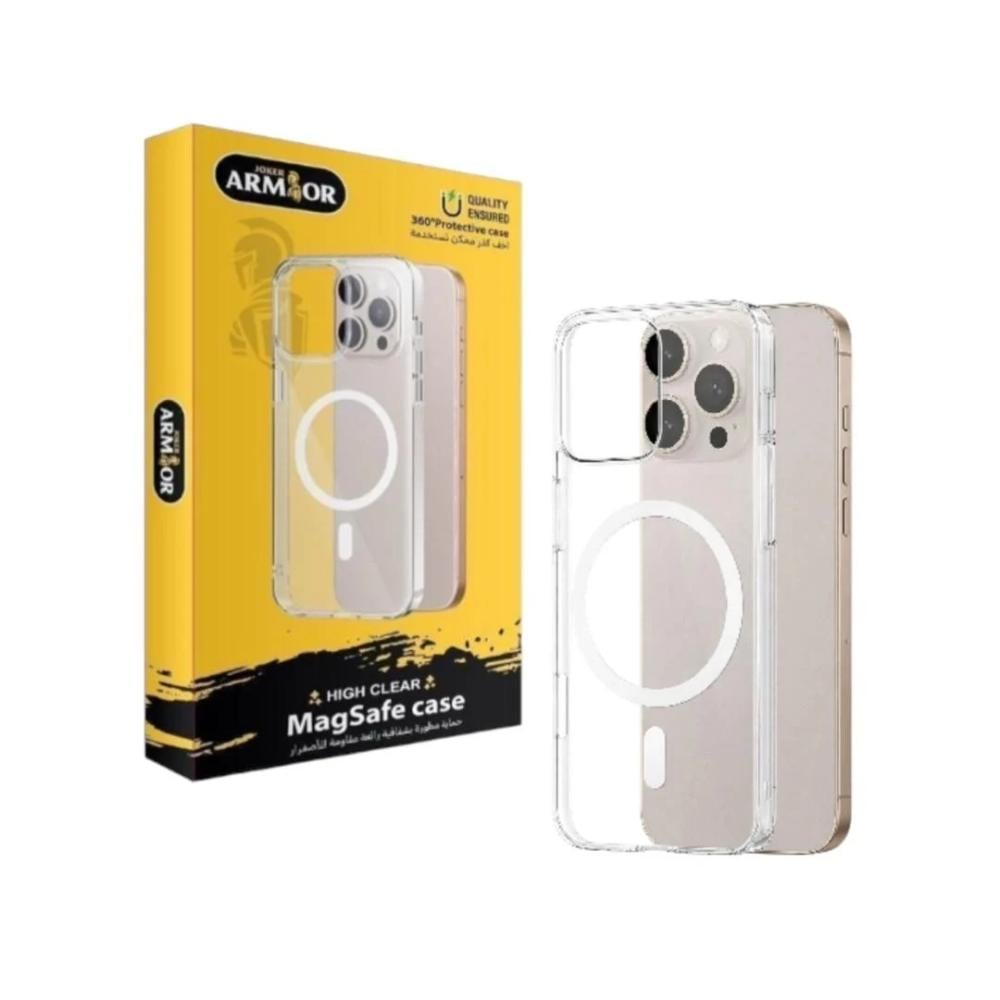

التصميم والشاشة يتمتع هاتف ايفون 17 بتصميم جديد مع حواف جميلة وإطار أرفع ومتانة معززة بفضل الوجه الأمامي المعزز بدرع سيراميك شيلد 2. توفر الشاشة المذهلة بمقاس 6.3 انش وتقنية سوبر ريتينا اكس دي ار رسومات نابضة بالحياة مع تقنية برو موشن التي توفر معدل تحديث تكيفي يصل إلى 120 هرتز لضمان تصفح سلس ورسومات أوضح وتجربة لعب غامرة ويجعل هذه الشاشة مميزة كاميرا فيوجن خلفية مزدوجة بدقة 48 ميجابكسل يأتي جوال ايفون 17 بكاميرا فيوجن رئيسية متفوقة بدقة 48 ميجابكسل مع عدسة فيوجن واسعة جدًا بدقة 48 ميجابكسل. توفر العدسة الواسعة جدًا دقة أفضل بمعدل 4 مرات مقارنة بهاتف ايفون 16، كما أن دقة الصور مضبوطة تلقائيًا بدقة 24 ميجابكسل لتحقيق التوازن المثالي بين الجودة وسهولة التخزين. تتيح لك ميزات مثل التقريب البصري بمعدل 2× والنمط الليلي ولقطات الماكرو والأنماط الفوتوغرافية المتقدمة التقاط تفاصيل ساحرة مهما كانت ظروف الإضاءة. تشمل إمكانيات الفيديو التصوير بدقة تصل إلى 4K بمعدل 60 إطارًا في الثانية والنمط السينمائي ومزج الصوت للتحكم بالصوت بدقة عالية. كاميرا أمامية مع نمط "في الوسط" سترتقي الكاميرا الأمامية بدقة 18 ميجابكسل مع ميزة "في الوسط" من أسلوب التقاطك لصور السيلفي ومقاطع الفيديو. يدعم المستشعر المربع التقريب خيارات التقريب والتدوير بمرونة عالية. تضمن ميزة "في الوسط" بقاء الجميع داخل الإطار خلال التقاط الصور الجماعية أو إجراء مكالمات الفيديو عبر تعديل الإطار تلقائيًا ليلتقط المشهد بأكمله. صُممت هذه الكاميرا لتمنحك صور سيلفي ومقاطع فيديو ديناميكية وتجربة تصوير أكثر ذكاءً. يعزز ذكاء ابل من إمكانيات التصوير من خلال أداة التنظيف التي تزيل الكائنات المزعجة أو غير المرغوبة والمعالجة المتقدمة للإضاءة المنخفضة التي توفر نتائج واضحة وطبيعية أكثر. تتيح لك ميزة إنشاء الرموز التعبيرية المتخصصة والتحرير الذكي للصور آفاقًا إبداعية لمشاركة ذكرياتك. البطارية والشحن صُمم هاتف ايفون 17 لتتمكن من استخدامه مع عمر بطارية طويل، حيث يتيح لك شحنها لمدة 10 دقائق مشاهدة الفيديو لمدة تصل إلى 8 ساعات، بينما يشحن الشحن السريع البطارية بنسبة 50% خلال 2- دقيقة فقط باستخدام شاحن باستطاعة 40 واط أو أكثر لضمان قدرتك على الاستمتاع بوقتك من دون الحاجة إلى شحن الهاتف باستمرار. المعالج والاتصال: يعمل هاتف ايفون 17 بشريحة A19 التي توفر أداءً سريعًا كالبرق أثناء تشغيل التطبيقات والألعاب وأداء مهام متعددة في الوقت نفسه، كما أنها تدعم ميزات متطورة مثل الترجمة الحية وعالم الصور مع المحافظة على كفاءة عالية جدًا في استهلاك الطاقة يدعم هاتف ايفون 17 تقنية الاتصال من الجيل الخامس 5G وبلوتوث 6 وشريحة الاتصال الإلكترونية لضمان اتصال سريع وآمن ومستقر. تتيح لك الشريحة الإلكترونية المدمجة التبديل بين مزودي الخدمة والسفر بسهولة أكبر، بينما يعزز مستشعر الاصطدام من سلامتك عبر طلب المساعدة تلقائيًا في حالات الطوارئ. يعمل هاتف ايفون 17 بنظام تشغيل IOS 26 ليجمع بين التصميم المبتكر مع تأثيرات الزجاج السائل التي تتكيف ديناميكيًا مع مختلف التطبيقات والملحقات. تتمتع شاشة القفل بتأثيرات تفاعلية ثلاثية الأبعاد، وتتيح لك ميزات مثل فحص المكالمات والانتظار الذكي واستطلاع الرأي في الرسائل النصية الاستمتاع بيومك بكفاءة ومتعة أكبر.

استمتع بشحن هاتفك المحمول بسرعة عالية سلك شاحن نحيف ومرن بمميزات عالمية من سلك انكر الاصدار الثالث من لايتينينج حتى تايب سي بقوة شحن 18 واط. المــزايا : - تصميم ممتاز: سلك شاحن مرن بتصميم نحيف وقوى ومتين. - متوافق مع أجهزة لايتنينيج وتايب سي مزدوج الاستخدام للشحن ونقل البيانات. - سرعة عالية في نقل البيانات والشحن أيضاً. - معتمد رسميًا من MFi. - دعم توصيل الطاقة سريع الشحن. - اشحن الأجهزة المتوافقة حتى 50٪ في 30 دقيقة فقط عند استخدام باورلاين بقوة شحن 18 واط.

سماعة لاسلكية بنقاء صوت عالي

📧 projectweb1@example.com
📞 0512345678